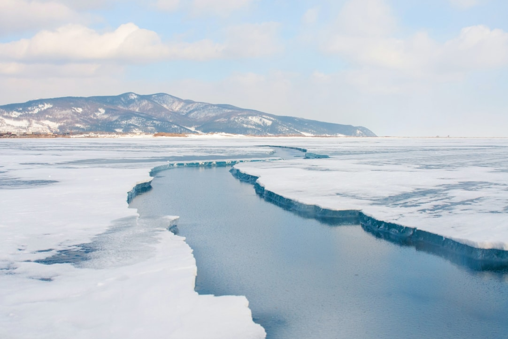

Байкальский лёд. Что чаще всего интересует туристов?
Февраль 2020
Лед Байкала — не единый монолит, ученые выделили 53 разных видов льда. Одни образуют причудливые наплески на скалах, другие складываются в огромные горы, третьи формируют гроты и надвиги, четвертые удивляют пузырьками внутри себя.
Туристы всегда задают о байкальском льде много вопросов. Самые популярные мы приведем в этой статье. Расскажем об особенностях и формах льда, а также о том, как он возникает и тает.
4°С
температура воды, при которой Байкал покрывается льдом
Как замерзает Байкал?
Снимок сделан в конце ноября, Байкал покрыт льдом у городов Нижнеангарск и Северобайкальск, в районе Чивыркуйского залива, Ушканьих островов и поселка Усть-Баргузин
Из-за большого объема воды Байкал замерзает медленно и неравномерно. Озеро покрывается льдом примерно с середины января, и сначала замерзает северная его часть — там мельче, а температура ниже.
В большинстве других озер температура воды на поверхности снижается уже к ноябрю, нижние слои воды поднимаются наверх, ведь теплая вода легче холодной. Так происходит до тех пор, пока температура всех слоев воды не достигнет 4°С. В этот момент начинается процесс расширения воды — она превращается в лёд. Верхние слои воды перестают перемешиваться с нижними слоями, и водоём замерзает.
На Байкале процесс замерзания происходит по-другому. На озере часто бывают штормы: вода, которая остыла и готова замерзнуть, снова перемешивается с нижними теплыми слоями. Вот и получается, что долгое время на поверхности озера находится теплая вода — именно поэтому Байкал замерзает долго и покрывается льдом только во второй половине января, когда вода остывает на достаточной глубине.
Нет. На Байкале вообще не замерзает участок около истока Ангары — это около 10—15 км. Тому есть две причины:
В реке сильное течение — до 1,1 км/ч и вода просто не успевает покрываться льдом.
Ангара вытекает из Байкала, поэтому в исток реки втягиваются тёплые воды со дна озера — они прогреваются из-за толстого льда. Они соприкасаются с холодным воздухом, но пока вода остывает, течение успевает отнести ее на 10 км вперед по течению — только там Ангара начинает покрываться льдом.
Когда лед на Байкале начинает таять?
В начале мая под действием солнца лёд распадается на маленькие кристаллы. Они не связаны между собой, поэтому вода заполняет свободное место, и ледяная корка распадается
Тает лёд тоже неравномерно — с юга на север. В южной части Байкала толщина льда меньше, а температура воздуха выше, там лед начинает таять в середине апреля. Полностью лед сходит только в конце мая — начале июня.
С середины марта лёд становится опасным для передвижения. На нем образуются промоины и пропарины — это места, где лёд истончается или исчезает под действием течений, газа метана и тепла речных вод в устьях. Их можно заметить издалека: пропарины напоминают лужи на льду. Чаще всего они образуются в притоках рек, или там, где подо льдом видны газовые пузырьки.
Почему на льду озера появляются трещины?

Благодаря становым трещинам озеро «дышит»: под лёд поступает кислород, и рыба не погибает от его недостатка, а солнечный свет питает планктонные водоросли
Зимой, в ясный солнечный день на Байкале можно услышать громкий раскатистый звук, похожий на выстрел. Это сигнал: лёд озера треснул, а вы стали свидетелем уникального природного явления — образования становой трещины.
Одним из свойств воды является её способность к сжатию и расширению в зависимости от температуры. Когда вода остывает, ее объем уменьшается. Так происходит, пока не будет достигнута отметка в 4°С, затем вода начинает расширяться. Это свойство является причиной возникновения становых трещин: температура воздуха меняется, лёд сжимается и расширяется, образуются небольшие несквозные щели. Когда температура понижается сильно, становые трещины буквально раскалывают лёд на куски. Длина такой трещины достигает 30 километров — пешком это расстояние преодолевают за 5–6 часов. Ширина трещин — до 3 метров.
Для человека становые трещины опасны: если лёд гладкий, они становятся почти незаметными, поэтому и человек, и машина могут запросто провалиться под лёд.
Как на берегах Байкала появляются ледяные горы?
На Южном Байкале был зафиксирован надвиг высотой 30 метров. На фото надвиги в районе мыса Соболев, апрель 2019 года
С февраля ветры на Байкале усиливаются и двигают ледяные поля — льдины, ширина которых больше 20 метров. Там, где лед встречает сопротивление — берег, скалу или сооружение — появляются надвиги, то есть нагромождения льдин. Они выходят на берег на расстояние в 20–30 метров, а в высоту достигают 16–18 метров — это примерно как пятиэтажный дом.
Зимой надвиги встречаются редко: сам лёд крепкий, а температура воздуха устойчивая. К тому же процесс расширения и сжатия льда в озере регулируют становые трещины. Их чаще встретишь весной, когда верхние слои льда начинают таять, вода заполняет трещины льда и снова замерзает. Корка льда становится монолитной и шероховатой — лед тает и теряет гладкость. Становые трещины больше не выполняют роль температурных компенсаторов.
Надвиги пугают гулом, с которым движутся льдины, и скоростью движения льда — до 10 см/сек. Они опасны тем, что ломают причальные сооружения и сдвигают на берег суда, которые находятся на зимней стоянке. Например, в 1933 году у станции Танхой надвиги столкнули с рельсов товарный поезд.
Почему на поверхности озера встречаются скопления колотых льдин?
По толщине торосов определяют время, когда они образовались: чем они тоньше, тем раньше появились — лед еще не успел промерзнуть и был тонким
Во время ледостава штормы на Байкале не прекращаются. Волны часто выламывают верхний слой свежего льда: льдины сбиваются в кучу и остаются на поверхности озера. Так появляются торосы — нагромождения льда, которые выломал ветер.
Особенно часто они встречаются вблизи становых трещин — когда температура повышается, щели сужаются, лед из них выходит на поверхность.
Также торосы часто появляются около берегов озера и вблизи мысов. Для автомобилей, саней и хивусов такие поля из острых льдин становятся ощутимым препятствием — острые края повреждают шины и прокалывают воздушную подушку. А некоторые торосы не получается преодолеть даже пешком: высота торосов достигает 10–20 метров, пройти десятки метров по скользким и острым горам из колотых льдин невозможно.
Самые красивые наплески у острова Огой — здесь сделано это фото, у мыса Хобой и у подножия скалы Три Брата
Крутые отвесные скалы зимой покрываются причудливым бело-голубым слоем льда — наплесками. Когда температура воздуха ниже нуля, а Байкал еще не покрылся льдом, капли воды от сильных волн и ветров попадают на скалы и моментально замерзают. Постепенно они намерзают друг на друге и образуются ледяные «холмики» — сокуи. Из-за сильных ветров они достигают высоты до 30 метров.
Почему байкальский лёд такой крепкий?
С января по апрель 1901 года на лошадях перевезли почти 8 тысяч человек
Фото: Иркипедия
Озеро выдерживает десятки машин и хивусов, которые движутся по льду Байкала. Зимой толщина льда достигает 1 метра — для рек и озер Сибири это среднее значение. Лед такой толщины способен выдержать вертолет.
По льду озера ежегодно прокладывают дорогу до острова Ольхон — она выдерживает автомобили весом до 10 тонн. В 1901 году с января по апрель на льду озера работала железная дорога, которая соединяла западное и восточное побережья озера. Вагоны двигали с помощью лошадей, а длина путей составляла 40 км.
Вот почему лед такой прочный:
чистая вода: байкальский лёд состоит только из воды и кислорода. Вы никогда не увидите в нём песок, грязь и глину, которые снижают прочность льда в других водоемах;
вода Байкала по составу близка к дистиллированной — в ней почти нет солей и прочих химических примесей. Под воздействием соли лёд тает быстрее.
Самый крепкий лёд находится у деревни Сарма, села Байкальское и вблизи поселков Хужир и Узуры — его средняя толщина 101–117 см.
В некоторых местах на озере образуются подсовы — смерзания отдельных обломков льда — в таких случаях толщины достигает 150–250 см. Вот только заранее сказать, где они будут, нельзя — каждый год Байкал замерзает по-разному, поэтому подсовы редко появляются в одном и том же месте.
В Чивыркуйском заливе, у мысов Лиственничный и Большой Кадильный, в устьях Селенги и Баргузина, вблизи Ушканьих островов лёд опаснее из-за пропарин. В этих участках слой льда тонкий, поэтому их нужно проходить осторожно.
Почему лед такой прозрачный?
Туристы всех возрастов с одинаковым интересом разглядывают глубины Байкала через лед и делают фотографии со льдинами
Чистая вода озера — причина, по которой байкальский лед прозрачный: в воде Байкала почти нет примесей и он постоянно самоочищается — зоопланктон чистит озеро.
Ветер постоянно метёт снег по озеру и тем самым полирует поверхность льда — она становится гладкой и прозрачной как стекло. На мелководье через лёд толщиной 1 метр можно отчетливо увидеть дно озера.
В зависимости от того, как падает свет, вода озера сквозь толщу льда приобретает голубой, бирюзовый или насыщенно-синий цвет и завораживает настолько, что от неё становится сложно оторвать взгляд.
Как и когда можно передвигаться по льду Байкала?
Будьте бдительны на дорогах с вешками — ограждениями, которые указывают путь — неизвестно, где образуется новая трещина
Февраль и первая половина марта — удачное время для езды по льду озера. В этот период лёд достигает наибольшей толщины.
Для движения по Байкалу советуем воспользоваться услугой специальных гидов — ледовых капитанов. Эти люди хорошо знают озеро и следят за тем, как проходит ледостав на Байкале. Они покажут вам самые красивые места, расскажут интересные легенды и факты, сделают поездку по льду безопаснее: маршрут проходит только по проверенным и крепким участкам.
Можете выехать на лед самостоятельно только в том случае, когда собираетесь двигаться по официальной ледовой переправе «Малое море — Ольхон». За этой дорогой наблюдает МЧС. Следы от шин, которые встречаются почти везде — не гарант безопасности, такие дороги прокладывают рыбаки без учета особенностей озера.
Не выезжайте на лёд в темное время суток: увидеть опасность и среагировать в темноте сложнее.
Комбинированный тур, половина которого состоит из трекинговых переходов по горам и льду Байкала, а вторая половина — из экскурсионных прогулок на автомобилях.
Активный трекинговый тур с большим количеством переходов по льду Байкала и ночевками в зимних палатках. Для тура вам понадобится определенная физическая и моральная выдержка, оптимизм и тяга к приключениям.